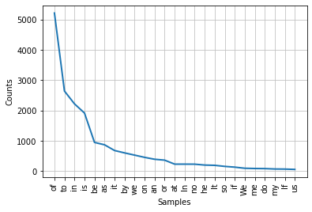
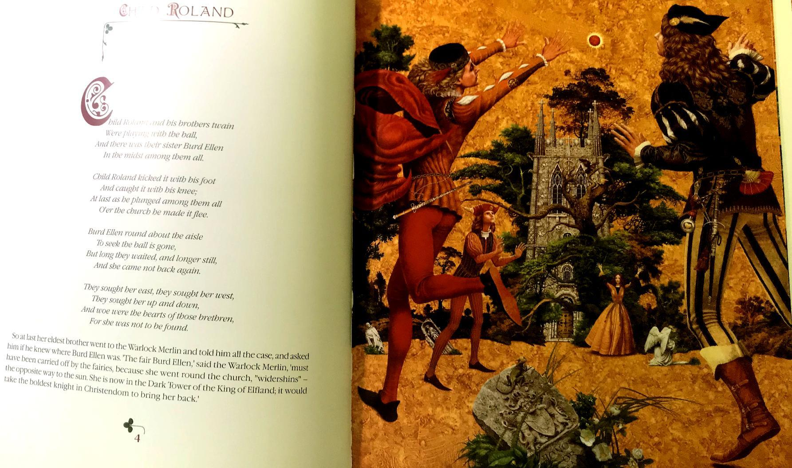
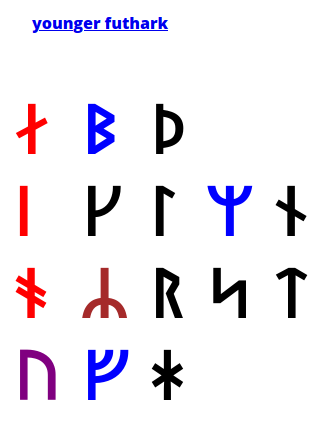
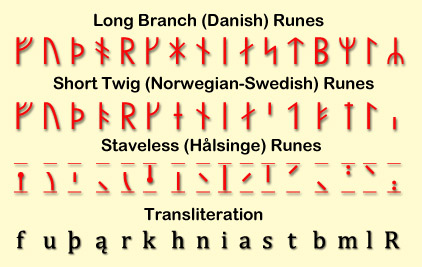
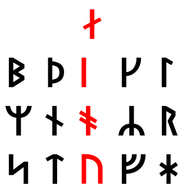
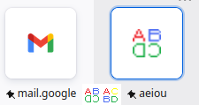
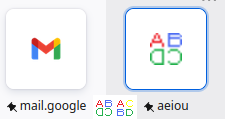

It is volume 12 ( 0 1 2 3 4 5 6 7 8 9 10 11)
volume 12 of a draft. It is online because I always wanted to kijken naar artists and scientists notes.
word is во рту
rot is red (rot is mouth in russian, and probably because it is red)
rot in english is red because of inflammation.
is it? How dare I mix this all up before the results from the program comparing words from the monoliteral up are ready?

Here something relating to the rotations I discuss since vol. 1

"Fair Burd Helen," said the Magician, "must have been carried off with her shadow by the fairies when she was running round the church widershins; for fairies have power when folk go against the light. She will now be in the Dark Tower of the King of Elfland, and none but the boldest knight in Christendom will be able to bring her back."
I wonder why it's not easy to find the poetic version of the whole fairy-tale, but that's the way it is in the Joseph Jacobs's collection: https://www.gutenberg.org/files/7439/7439-h/7439-h.htm
and as I promised in the very finale of vol.1 I did go to jews and when I discussed with them the way I circle round the field to find more and more, I noticed that my hand went "widershins", the counter-clockwise. And this word tells that counter-clockwise is the direction outside. And by that road clock-wise will be into the church, so in this way крёстный ход перед входом в церковь должен быть по солнцу, а выходить из церкви против солнца? Я уверен, в церковной литературе лежит весь ход религиозной мысли по причине которого пришли к сегодняшней традиции водить хороводы отворотные.
231 gates tell that one direction is delight while the opposite is plague.
And plague was in the past, so when I showed the "deeper and deeper" thing, I probably went into the past with my thought. And indeed, counter-clockwise goes to the left at it's top and they say our timeline is left to right (at least for those who read and write left to right. semitic way of writing from right to the left may make them enmious with the rest of the world, because their eye-movements are the opposite of outs, and we trust them when they lie, yet we distrust them when they speak the truth. Huh, that's unexpected. I find it as I write. Before I stumbled across it, I
And that sentence promises delight in the future, which is only natural.
Because delight is what I saw to be happening in my capsules, where each move will lead to ecstasy.
When I speak of morphemes, people tend to ask if I speak of the roots, but aphexes may matter more:
ушёл убежал улетел умчал убрался и так далее - приставка самая важная часть этих глаголов по смыслу, потому что смена приставки может изменить это слово на антоним. у is probably the same u as in away and out. It's funny that I don't immediately see it neither in прочь not in долой, but I definitely see it in вон.
And that probably relates to в (in) relating to bu (no) as if at a hunt, there's no animal, if the animal is hidden in the ground somewhere.
New high session. Saturday, to my surprise. I didn't manage to give up weed, because I have broken my motivation by not paying back my brother his due. I made an unhonorable misdeed by not sticking to the verbal contract, and now I cannot do it because the state took him away. And I have to smoke to create this research instead of building my capsule. If I began building my capsule, I'd surely be sober more likely. I don't need being high to build that. Unfortunately, it seems I must smoke weed to be auistic enough to write this thing. It takes me many years now, some people wrote that ten or even twenty years it took some scientists to come up with their righteous theories. So I make it publicly for over 7 years now, so I expect it to bring fruits in over 2 years or so. I also made it secretly for over ten years before that. So in 2024 or 2025 it will become big for me.
abe iotu would be the words if we wanted to combine those five vowels, b and t into one word, the best I could do is two. abey jotu. obey to a jew?
abei otu abei lotu (l ~ I) these words I pull out of the blue. I try them on. If they're no good I will look for something more, don't worry about it, please.
I didn't speak enough about what I did here.

I think I took the 16-rune set as they present it and found that A and E is the same Ææ
that is why B rune looks like F in the short twig variant:

And luckily it is a 16-rune sent, and I see that it doesn't hae e or g.
Thus my arrangement seems to be even more based than I even thought.
Looking at old russian flag, I see notes of german flags. Only then I see that those brown flags (russian wite black yellow is even more brown than white black red, and I see that russian flag in modern german one, only whites are substituted with the reds.
I should stop trying to contact religious people. As one pastor told me, religions are to control the masses, not to understand the world. Maybe professional jews are the smartest believers, htey're believers nevertheless, so I will confuse their belief system. I wanted to say that something is wrong with them, but yes, this argument is much more important (was something wrong with me when I believed? I wouldn't think so, other than the assumption was thoroughly arbitrary, just as what if, let's learn to believe. Let's learn to believe. Belief can take towns. Often it took towns down.
Mye will e is good. But you know how they say of the good intentions.
Interesting is the way that reconstructed order of younger futhark lays down into the axial structure:

It's as if ᛅ is a form of ᚾ and we have ourself three 5-letter-long lines with t reflecting f and d reflecting g and what else?
I would replace the ᛦᚱ with ᚱᛦ, actually the way they're in bornholm alphabet stone. Because ᛦ is transliterated as R and my bold guess is that ᚱ is П, mistransliterated because of how much ᚱ reminds R. Yet it's not a coincidence, because russian R looks like Р. (and even without the dot)
And now I see that then ᛘ reflects ᛦ
and ᚼ for sh reflects ᛋ for s.
But then again I doubt I cannot compare anything. So let's leave this ultracomparativistics and stick to new and more certain technics: the classical comparatevistic techniques of comparing words, not letters. Even if those words are the same letter. As I did with a and others in the previous volume, as I promised in the beginning of this one, at this stage we deliver the same comparison at much larger scale and with much more advanced technology.
a b (cdefghijkl)
(mnop) (qrst) u
labials are as if standing for two words. Be and more complex concept of помни.
but how dare I use slavic for the latin alphabet? Maybe because I допускаю этрусские корни у славян. Хотя мне присылали книгу где связывали этрусков с кельтами, но кто знает нет ли генетической и культурной связи меж ирландцами и руснёй. И те и другие вполне по-европейски выглядят, и вроде странная русская р у них тоже присуствует, или это у шотландцев, или у обеих наций, ах я не знаю, ололо. Это всё в любом случае голословно, так what are you reading for?
abc
mqu
?
aback
make
?
abacus
mquus
?
magic abacus?
abacus get back by itself (when you rotate it)
И позиция фишек будет правильной или неправильной, если ты повернёшь их в ту или не ту сторону. В советской торговли счёты располагались фишками справа. Т.о. поворот посолонь скидывал счёты в начальное положение.
all videos in russian and ukrainian I saw show them arranged like that.
Существует традиция, скидывающая счёты и в другую сторону, практически любое видео на английском распологает её с другой стороны, так что сброс будет против часовой, но я не нашёл видео с практическим применением оного, так что я решил оставить вам разобрать это самим, кто знает насколько компетентны те ютуб-блоггеры, и не попугайничают ли они друг за другом.
Забавно, что японские счёты располагают строки вертикально, также как и классическое китайское письмо, но в отличие от него они похоже начинают счёт слева:
(сбрасываются они специальной кнопкой, так что вращение к ним неприменимо.
и не только японцы так ими пользуются, но похоже что и индусы и многие другие англоязычные, оставлю эту тему тоже пока что в стороне)
turd~dirt (probably these are cognates with for whatever reason dirt being more polite form of it, which could make it some euphemism, thus turd is more ancient form. as a hypothesis, to my collection too)
a b (cdefghijkl)
(mnop) (qrst) u
is qrst quest with vowel r?
cdefghijkl makes no sense whatsoever no matter how much I look.
this thing is just retarded so it seems. even if I can unite (uvwxyz) into one group for the reasons, no matter, it doesn't matter. enough of it.
sunday13june
haha, this notebook becamse my wild diary.
diary berry awry [эрАй]
[][][]\][][ppiofpppppppppjo uppppjf df
To my surp[pprise I push p's by pinky, because the next finger is lazy to go further than o.
It leads to me still not exactly knowing where []'s are, and they're right under the right pinky. I still push p by pinky, it siims more natural for him, for he runs even to backspace, it's more active than the next finger, that is the freedom of being
I am a poet, so I will die of that. Of peotry, of speaking way too much. It's sad and tells that I have to hide out.
a, English indef. art. I am a man.
I, English 1st pers. sg. I think, therefore I am
a, Danish prep., of, at, to
a, Danish v., imperative of ae, to pet
å, Danish n., small river, creek
i, Danish prep., in, inside Sport i Texas: Sports in Texas
ø, Danish n., island Pitcairn er en britisk ø: Pitcairn is a British island
à, Dutch prep., per, at, borrowed from French 5 stuks à € 10,-: 5 pieces at €10 each
u, Dutch pron., 2nd p. sg. formal Bent u tevreden?: Are you happy?
u, Afrikaans pron., 2nd p. sg. formal U het u woorde vervul: You fulfilled your words
à, German See Dutch.
à, Swedish See Dutch.
å, Swedish n., river, creek
å, Swedish prep., used in certain expressions as on å andra sidan: on the other hand
i, Swedish prep., in, to Sport i Texas: Sports in Texas
ö, Swedish n., island Jag är en ö: I am an island
á, Icelandic n., river Thames er helsta á Suður-Englands: Thames is the main river of South England.
á, Icelandic n., ind. acc. sg. of ær, female sheep
á, Icelandic v., 1st and 3rd pers. sg. of eiga, to own Ég á líf: I'm alive
á, Icelandic prep., on, in Ég bý á Íslandi: I live in Iceland.
æ, Icelandic adv., always, forever
í, Icelandic prep., in, for Íshokkí er vaxandi íþrótt í Ungverjalandi: Ice hockey is a growing sport in Hungary
å, Norwegian part., inf. marker Å være eller ikke være: To be or not to be That's some TO.
i, Norwegian prep., in, inside Sport i Texas: Sports in Texas
á, Faroese n., brook, stream, river
á, Faroese prep., on, in, at
í, Faroese prep., in, into
à, French prep., to, at, per Je vais à Londres: I'm going to London
a, French v., 3rd pers. sg. of avoir, to have Il a une voiture: He has a car
y, French pron., there, to that Nous y sommes: We are there
a, Italian prep., to, at, in Andiamo a Roma: Let's go to Rome
è, Italian v., 3rd pers. sg. of essere, to be New York è una città: New York is a city
e, Italian and Guerra e pace: War and peace o, Lithuanian conj., and
i, Italian m. pl. def. art. I giorni più belli: The most beautiful days
o, Italian or Essere o non essere: To be or not to be
e, Spanish and, when preceding the vowel /i/ Francés e inglés: French and English
a, Spanish prep., to, by, at Yo veo a un hombre: I see a man
o, Spanish or Ser o no ser: To be or not to be
y, Spanish conj., and Guerra y paz: War and peace
u, Spanish or, when preceding the vowel /o/ Con mis padres u otros: With my parents or others
a, Portuguese fem. def. art. A mulher de preto: The woman in black
a, Portuguese prep., to, at
e, Portuguese and Guerra e paz: War and peace
é, Portuguese v., 3rd pers. sg. of ser, to be Nova York é uma cidade: New York is a city
o, Portuguese m. def. art. o ditador: the dictator
o, Portuguese pron., him, it as dir. obj.
a, Romanian fem. sg. pos. art. O prietenă de a mea: A friend of mine
a, Romanian marker for inf. verbs A fi sau a nu fi: To be or not to be
a, Romanian 3rd pers. sg. of modal aux. v. avea (have)
o, Romanian indef. art. o carte: a book
o, Romanian pron., 3rd p. acc. f. unstressed
a, Czech and Vojna a mír: War and peace
i, Czech conj., and, even, both Já i ty: Me and you both
k, Czech prep., to, towards Běžel k domu: He ran towards the house
v, Czech prep., in, on, for V krabici: Inside a box, V pondělí: On Monday
z, Czech prep., from Z domu: From a house
o, Czech prep., about, for, on Kniha o tobě: A book about you, O pět let dříve: Five years later
s, Czech with S tebou: With you
u, Czech prep., at, by U moře: At the sea
a, Polish and
i, Polish and Wojna i pokój: War and peace
o, Polish prep., about, at, for Musimy porozmawiać o Kevinie: We need to talk about Kevin
u, Polish prep., at U kresu dnia: At the end of the day
w, Polish in Noc w muzeum: Night at the museum
z, Polish prep., from, at Jestem z Polski: I am from Poland
z, Polish prep., with Z tobą: With you
(this size of the text is me adding some more lines to that collection)
a, Serbo-Croatian and, but
i, Serbo-Croatian conj., and, even Rat i mir: War and peace
k, Serbo-Croatian prep., to, towards
o, Serbo-Croatian prep., on, about
s, Serbo-Croatian prep., with
u, Serbo-Croatian prep., in, at, to Život u gradu: Life in the city
a, Slovak and
i, Slovak and
k
s, Slovak with
u
v
z, Slovak prep., from
a, Slovene but
o, Slovene prep., about
v, Slovene prep., in, into Življenje v Evropi: Living in Europe
z, Slovene prep., with
o, Turkish pron., 3rd p., he, she, it
o, Turkish dem. pron., that O gece: That night
a, Hungarian def. art. Éjszaka a múzeumban: Night at the museum
e, Hungarian determiner, this
ő, Hungarian pron., 3rd p. sg.
şi is and in romanian. These short words, which are monoliteral in some languages are the key to finding the other short words of that monosyllabic period. And then we'll link these words to chinese hieroglyphics. Showing how the same sounds spread through all the other conceptions.
şi as italian si, yes, which is not a coincidence, becuase in russian да is both and and yes.
rna looks like ma.
is dna daddy then?
The way words can be the same in languages of different "family" but not in the languages much more related, tells us that language is fiction, and only words matter. First there was the/a word, they say.
(as you can see above, the same a can be not only a (as in english, , but also the in both portuguese and turkish.
And what does o, Romanian pron., 3rd p. acc. f. unstressed mean? is it some case english philology doesn't know much about. её? isn't it how they make accusative in japanese? Did this o work connects hungarian and japanese? Words are links, words are the true memes, not some abstract languages. Language is chimera, of thousands of самостоятельных elements.
-их ~ of
-ть ~ to
russian i is english o? but or is ili, not i, i is and~yet.
or ~ иль.
или is и + ли. thus i ~ o + r ~ ль, деятель doer, ель ~ er. ель = fir. e = fi? E = Fi? ерь ~ fire?
ель ~ fire.
Many slavic languages have identical prepositions and even when they seem to not know some forms, they're still found in some biliteral: polish doesn't know k, but uses ku instead (russians use both к and ко, and that ko shows that it is exactly internationally known co- prefix, which is to also because some languages prefer до (do) intead of that ku, prefer d to c, and here we see how alphbaet could be the collection of these short words. And yet I wonder how could it be that в is not known in english)
Why do I rely on this random collection of the shortest words. I have to call my partner in this to tell him that I need my program now to make my own collection of these words.
Here's something else, showing the good vibrations and right rotations. The best japanese band surely knows which way to roll, they're almost unaffected by abrahamic fight with sorcery.
I just came to the formula AVZ as the basis of the alphabet, as to those three mothers.
Because 3 ~ З.
and now I see that IVX would be more traditional form of those.
and yet that AVZ I came upto is probably how that IVX was read.
I as ay or aye?
V as in? в (yet what is вон? I thought it was related to out and away, but it seems -он is no.
X as out? ex
вон as not inside hypothesis..
гон это то, что не пойдёт?
alone = al(l are) no(t her)e
tone = не тёмный? or to- as dye? but that would have some opposite meaning. I shouldn't stretch it this much.
Is chinese 都 [tu] which you could meet in kyoTO could be relatd to egyptian 𓏎 [t] you could meet in egypT. And if it's true, 𓏎 stands for hill, symbolizing the capital, even though I thought it stood for -land in egyptian. And if it does, then Egypt was an empyre with other lands seen as subordinate to the capital which was egypt to them.
знать is gnatt in roman: cognitive, recognize, cognate
and that gn is kn in german: know, kennen, can
and that з ~ g thing is spectacular, because g stands where з does in alphabet.
e fgh
ежзи
I'm not sure about f ~ ж though, but if f is digamma then gamma could be k if ж is f in a way.
to fuck ~ жахаться? жарить? fire? жарить ~ fry, so that ж ~ f thing could be something.
ж жарить
f fry
з знать
g know? g as ng? зн as an affricate standing for some single sound? носоое а как а! у простуженного студента может звучать? носовая а как когнат слва ум? кто знает, кто знает.
Работа будет подолжена (и помоги мне боги параллельно капсулу построить и так далее) но на сегодня это всё. Я поехал в магазин по сладкое.
враг ~ врак
abcd
efgh
абвгд
еёжзи
e~её
f~ж
g~з
h~и
(because fry~жарь (fuck жахай пришло даже раньше.. I'm in a twilight zone here, I don't know if what I say is true, I only research this subject, I try to compare lines between themselves and I cannot say that I CAN compare them yet.
abcd - b and d are be and do, быть и деять. с is со, c is co. (s is so in russian and many others, c is co in english and many others) and in this sense c is much closer to d than to b. b is in? в? b is bu? no?
d is duh, д is да.
bu and da, what language does have it like this?
呃
is some weird chinese vowel for duh. as if it's yeah but in such
wild chinese phonology, it's weirder than ы.
both d and j are lingual, so what do I worry? they're from different lines, that's all, different dialects but the same word. Language is thousand-head chimera, words are much less abstract thing. Words are much more real. Words exist throughout languages. It's not how many languages you know, it's how many words you recognize across cultures.
Modern academia is supported by go-t, and thus socialistisch, and as a result, ineffective. When business makes science, they make much better job about it. Human Genome was a private initiative, which go-t only tried to subvert. Was successful in spite of go-t.
government and goat is sheit for sheitan, го-о как госудрство and shit.
nnnnnnnnnnnnnnnnnnnnnnnnnnnnnnnnnnnnnnnnnnnnnnnnnnnnmmmmmmmm
n and m are the labial, reflecting b, бв, and thus they're bu, no, in- im- il- ir- all sonors are variants of one another, sonors before some letters stand:
il is only before l
ir is only beore r
(thus they don't matter much, they're.. or do they? they're some n's or m's I think. ᚱ as a form of ᚢ again.
im is before m, p,
un-is only n, unbelievable,
in is boefore v, t, c, d,
why does in- go un- before b?
u ~ i? и is i in russian.
so un is some basal form? because u is always with n in it, unlike i.
u and i are the pronouns? could be but then u ~ i and thus ya (you) ~ я [ya] (I) and that is how second person is whethere some pronoun of the first person or the third person (you or thee, we or they, you and we both could be some of uvw, the letter as a word.
I as a form of U and thus A is a form of I and U, if the lines repeat themselves in differnt dialects, and thus c ~ g ~ з cognito сознаю. со ~ з?! what is наю then? как в наитие, чувствую? пинаю пеняю пинает как пень? пенять как пеня? воняю, внутренности чувствую? склоняю сколениум? склоняю к сексу? склоняю наклоняю склоняю с~soft,слехка,easy,see(I see what I do, and thus I know what you do?)
Before I have that program, let's play as if I only know two languages because all the other languages are lost. Let's only play with russian and english. Or let's even start with only russain, because I know it the best.
a во до
ем же за
и ко ли мы не
о по со то (от?)
у це чё ша ща
эй ю~я
и коли мы не звучит как прекрасная часть какого-то предложения. осталные строки отс
and in to
eat yo pro
and to if we no
of by co- to (of?)
at ce wha hush nao
hey you~I
?
so what it tells is that that russian set I prepared is not translated into russian nicely and thus false.
Seeing how alphabet company colours remind my structure  standing next to it in my favourites, made me play with my .ico a little and those letters again made me think of those timelines of AD and BC as if the modern AD period is how our laphabet goes: first line of it is A-D and then BC would be how itwas in the ancient past. B as the first letter, C as shin, and no air, just water of B and fire of C (ash) and if C is ash (I thought of shin as the sefer yetzirah's mother) and I see that thus C ~ H ~ X ~ ƆC and here I think of F ~ H and H as Ⱶ and maybe even as ᚴ
I think I sent into google my book. Do they secretly read it and that is why they arranged colours like this? Alphbet they call themselves now. Whether because they're hijacking the term "alphabet agencies" or because they actually what.. they make business with my science simply because I use their services also for free. I even adblock the commercial on youtube and they seem to be fine with this. But if they read this book, I wonder why their G is so weird, as if it's asian k-first thing, but why does it go couter-clockwise then? Because if it's normal red-blue-and_so_on, then why does yellow goes after green?
So I think it's counter-clockwise eastern canon. Do they wiz against them or do they just used the rainbow order going the way G goes, they didn't invent the letter, but then why doesn't their M follow the rainbow?
But visually it won't be better, if we go with our rainbow clockwise: now (at the right we have some abomination with blue on the top and red at the bottom. Red is high and blue as low makes much more sense and probably that's why it looks better the way they have it. my repainting is lame.
I should stop eating so much sweets. Only one unit of sweets should be bought the next time I feel like I need it. Since I mentioned going for sweets I wrote some retarded crap about google and.. well, before that something very based was going on.
Actually, now I see some pretty in the clockwise direction of the G rainbow. White Blue eyes, red lips, yellow chin, eyes are blue and ye.. green.
Blue as blanc? Зелень как желчь? желчь желта, я как булимист обжоркин это знаю. если бы не блевал капец жирдяем был бы. Но горло следует промывать водой после блевотины, а то кислоте в горле делать вообще нечего. what kind of typos are they?
If blue is blnc, is red black? In chess red is black. In cards they're two different groups? But what if crosses and diamonds are both crosses, and hearts and pikes are hearts upside down and downside up.
I should remove all my teeth fore many reasons:
- without teeth I don't have to fix them, don't have to brush and floss them, they don't rot.
- without teeth I don't bite by own cheeks and lips.
- wihtout teeth I eat less. I need to remove them to balance my weight. I'm overweight all the time. it's almost 30 extra kilos, like wtf!
+ teeth give some aestetic, but that's it. They also help to eat, but I see it as disadvantage in my case.
+ they used to be used as instrument (to bite off something) but today metal instruments are to be used.
That is actually one of the wilder inventions (or ideas) beyond the capsule thing. I see myself as closer to the embryo as possible, because I haven't seen the disadvantages of that state yet. That state seems to be the ultimate. The naturally developed state. Not chaos we're in.
The other in that axis is removal of all the bones. When I can stay in the capsule forever, I on't need bones anymore.
don't
won't
hasn't hast as past.
won is the future: those who won, have the future.
done is now? doing it is.
Данное даренное present. done is present. done is given.
do = give? does v reverse g into д?
дай = give and давать is probably to give calqued backwards or who knows how.
give live
save rave
love glove
row owe
raw awe
wife wives
knife knives
life lives
safe saves
have has had
or
have had has
?
english ve is ю in russian. (funny, because russian вы is you, the other way around)
have имею
has имеешь? имеют? имеет! -st in latin.
had имел (-ed ~ -ел)
And so it's monday 08:03 and I smoked three or four times today. Last time I did was to neutralized all the sweets I devoured. I also vomited most of them. I do need moderation, I do need to pull all my teeth away.
missive is a new word for me. reminds message in both form and function.
lehti is finnish for leaf. h ~ f or h ~ s? лист is leaf in russian. ſ ~ f after all.
b as no is not only in chinese, but in slavik too in some narrow context, check it out:
z is with , bez is without. As if be was не, as if that's where v and ν meet again.
Was plato the man who made people distance themselves from philosophy and to become specialized in more abstract or obscure subjects? Hence mathematicians, physicists, all other sciences where platonists couldn't into because they were not the sharpest pencils in the box. But logic. I think they stole it. Did Diogenes Laertius said that or me? Lurye said so (I don't remember if he Solomo or Solomonych) so why do I trust a jew again? I trust them where I catch them lie and I accept their narrative when.. why did this leftist word infecteed me?
The academic dogmas are so strong, that
https://en.wikipedia.org/wiki/History_of_the_Greek_alphabet#Hyginus'_account
used to say literally the following:
[[Hyginus]] recounts the following legend about the introduction of Phoenician letters to Greece
about this chapter:
The three Fates created the first five vowels of the alphabet and the letters B and T. It is said that Palamedes, son of Nauplius invented the remaining eleven consonants. Then Hermes reduced these sounds to characters, showing wedge shapes because cranes fly in wedge formation and then carried the system from Greece to Egypt*. This was the Pelasgian alphabet, which Cadmus had later brought to Boeotia, then Evander of Arcadia, a Pelasgian, introduced into Italy, where his mother, Carmenta, formed the familiar fifteen characters of the Latin alphabet. Other consonants have since been added to the Greek alphabet. Alpha was the first of eighteen letters, because alphe means honor, and alphainein is to invent.
Naturally I had to change that line into
[[Hyginus]] recounts the following legends about the development of the alphabet
What if 'd in I'd is more based than had. The more basal, the more primitive, a part of had.
Because that is literally -ed and thus it can be attached not only to verbs. I'd see would then means I saw? I did see? -ed is did? no, did is ed added to do. doed is did but oe's
s is present
d is past
l is future
all three suffixes are lingual, I wonder why. Maybe because they used to be the same letter and divided into times later.
Object's something
Object'd something
Object'll something
that -ing in the first case is like someth's a verb.
is and was - the other way to turn present into past. And I don't see not future form in this system, and thus this sistem is more ancient and from times where we didn't know future. No wonder those legends of ясновидящих appeared, and in russian it specifies: not only seeing, but seeing clear (and not a word about the future too, because those detectives could see into both futue and the past)
clairvoyant is the english word, even though it's french. And a complete calque in russian.
Japanese ie for yea and iie for не makes me speculate:
is their no literally да-да? and is it standing for take and give (two times da, where da is ta in take and да in дай. and is that g (russina д looks like this in cursive) is д in times when we considered all the linguals one or few letters and didn't distinguish between give and take, because it is the same action actually. And were ke in take and ve in give the prefixes we know in russian in their pure forms of в & к?
v and k are they not only in and to, but also вы and ik?
so ta is da (duh)
and take is ta ik (I give, даю я)
and give is ga U (give you, дай вы)
and most probably those are the same g and д (g is д in russian cusive, they both are and thus they remind cursive ד (looks like 3 with a bubble at the cenral bridge) while ג and ז look like mirror reflections of each-other, which relates to that c ~ g thing (so I take from modern "dogmas" what I find fit and reject what doesn't fit into my theory, how convenient. So I banter myself too, so when I banter you please take it easy)
Here, did they camouflage fuck for folks? (that is how poor foreiners can get the songs, still love 'em)
because what follows is they admit that funk is an euphemism for fuck. So are folk music fuck music? Makes sense for rhythm could be invented to keep the lovers in the same tempo. And thus they would speed at the same time and came to the culmination at the same moment.
Or is it the same word, because fucks is what folks do, and thus that's how they're different from their children. And once children got puberty, and thus both interest and ability to have sex, they soon become folks themselves.
is -self the serves' postfix, so he didn't hide the way his or her происхождение, социальную принадлежность?
That song is the best illustration of what funk actually is all about:
Hell yea!
Hey Sloofus (yeah) tell us something good
Let's take it to the stage, sucka
Have no fear (Get it on!) McFunk is here
Doin' it to the max
Slick Brick! How’s your loose booty?
(How duh I ever metcha) - not sure if it's do or have, so duh (all lyrics sites say it's "laughing atcha" again)
or is it "how do I have omitcha" somebody write to me if you know this dialect of english well enough.
Let me tighten it up
Get it on
Yeah
Everybody funking and don't know how
They shoulda seen the bull when he funked the cow
He funked her so hard they saw some smoke
He said, let's get in the bed and funk like folks
Laughin' at ya (ha!)
Funk used to be a bad word
Say it loud! (Sittin in the woods upon a log) I'm funky and I'm proud!
(Finger on the trigger)
(My eyes on a hog)
(And I sat back)
Talking 'bout you the godfather (Laughin' atcha!)
godmother, (Sittin in the woods upon a log) grandfather.. Ha!
(Finger on the trigger) (Fool and the Gang! hehehe)
(My eyes on a hog)
They call us the funk mob. (And I sat back)
(Laughin atcha!)
Dig! (Get it on)
Little miss muffet sat on her tuffet snorting some THC
Along came a spider, slid down beside her
Said: what's in the bag bitch
She said I'm laughin' at ya, ha, ha!
(Hey Fool and the Gang!)
Funk used to be a bad word
(Let's get it on! Let's take it to the stage)
Motherfunk you
Hit it!
Sittin in the woods upon a log
(Good god!)
Finger on the trigger
My eyes on a hog
And I sat back
(Earth, hot air, and no fire)
Laughin atcha!
(They call us the funk mob)
Ha, ha, ha, ha!
Sittin in the woods upon a log
Finger on the trigger
My eyes on a hog
And I sat back
(In your loose booty)
Laughin atcha!
(Ha! Dig)
Slick and the family brick, whatcha you doing?
Let's take it higher
Hey Sloofus, tell us something good
Ha ha ha!
Ha-a-a-a, ha-a-a-a-a
Those crazios. (Crazios!)
Ha-a-a-a, ha-a-a-a-a
New type thing (New type thing)
Brand new funk (Brand new funk)
Ha!
Crazier than a sex maniac in a whorehouse with a credit card!
Say it loud, I'm funky and I'm proud (doing it to death!)
Say it loud, I'm funky and I'm proud (ha ha ha!)
Sittin in the woods upon a log
(Get it!)
(Hey Sloofus!)
Finger on the trigger
My eyes on a hog
(Tell us something good)
And I sat back
(Let's take it to the stage)
Laughin atcha! (Funk used to be a bad word)
(?? hey, where's the godfather at?)
Sittin in the woods upon a log
Finger on the trigger (but everybody (Hea!) try to get down)
My eyes on a hog
And I sat back
(Tell him, when in doubt, vamp!)
Laughin atcha!
(Ha, ha, ha!)
(On the one!)
Sittin in the woods upon a log
(Tricky Dick wasn't worried about no incriminating Watergate)
Finger on the trigger
(Information being on those tapes)
My eyes on a hog
And I sat back
(That sucker didn't want y'all to dig on him trying to cop)
Laughin atcha!
(An ounce of that p-blow!)
Sittin in the woods upon a log
(Now he's a-laughin' at you yeah)
Finger on the trigger
My eyes on a hog
And I sat back
(They call us the funk mob)
Laughin atcha!
('Cause they funky in the White House too)
(Let's take it to the stage, y'all)
(Hit it)
snorting some thc, not smoking it, oh wow, that is hot
like and love like take and give with other lingual in the front?
li ta
lo gi
let's collect more examples with ve and ke:
save sake
brave brake (break?)
wave wake
weave wig?
oh yes these seem to be valid suffixes. I wonder where it leads me, or maybe I don't, I know it is the parth to getting all the morphemes.
shave shake
behave.. uhm..
rave and rake? more obscure words return more obscure results.
but stave and stake are great.
So these pairs are great for learning the language, but we descend even further into the past and thus we know what exactly is in there and we have to learn only about tens of morphemes, maybe only two and the others are the further implications of those. We'll see. yin-yang model seems to be in the root of it all, I yet have to reach it from the point of modern lexics. I jumped into the future of my work, but now I wonder if it doesn't disturb the truth I yet have to deliver, if my preconceptions won't distort it.
but slave and have don't have the pairs with ke as far as I can see.
unless have is some hide and slave is some slike I don't know or slide I do.
ϰ is the cursive κ like wtf
but why am I surprised, since I told myself that k and h and x are all the same in a way in some historic sense in some previous forms of the writing system. The question is caused by me not being certain about it.
I'm funky and I'm proud!
was heard by me as I'm funkin' I'm proud! so is -ing equal to and phonetically? and semantically? licking good is lick and good, fucking great is fuck and great? doing well. do and well. not too far away semantically they're. Let's live with this hypothesis in the head and see if it applies well. This is how we сократим количество слов, словно отмотая плёнку к началоу.
Cause they funky in the White House too
wood make more sense to me if it was Cause they funking the White House too. Thus only are would be missing, but I don't know the language enough to say that... well what I say si I don't get it well enough to say I understand it. Потому что они охуенны в белом доме тоже? или потому что они ебали белый дом президенты эти. это если фанкин а не фанки ин.
начало кончало.. ко is what? но ало в кончало не особо уместно.
начало конец.. строка выше тем не менее говорит, что нач- is -нец
and is it really? In that natural rhyme it seems naturally so.
нач-Л
К-нец
нец is на чьих
когда как в фамилиях I know surnames ending with вец, but not nets. Even Lenny and Nina are Кравец, где вец тот же самый вич как в петрович, диалектные различия невелики.
Вери блади сёрнэйм иф зэт крев из славик. ик вик тот же самый вич и виц. вик. вый is also in this band. and that is how k is among i's. and if l is in this I-gang, I look at -el suffix and ask is it a varinat of -вич? but the closest to -el I can do is in мишкин is михайлов is михайлович.
so what is -ич and why do we need it? it's их. их как ich? товарищ товарич. я шутил что тваричи, но товаричи, их родители лишь товар. их родителей продали как товар.
-in is that very n of нец которое вец, в которая in. I don't understand! is v ~ n for real? V ~ N. see?
in russia we have two types of surnames: ending with ov/ёv/ev and ending with in. in is literally v and vo in russian. -ko in ukraian surnames are usually attached to -en ~ -in.
is -ov surnames add v to that very o?
okolniko doesn't look like ukraian surname, it would probably be okolnika in there. some surnames of the region end with -a gangha (ganzha) is my favourite. ganghin it would be in russian, but why don't I know russian names like that? were they tranlated into коноплёв for example?
they divide to imperare
we speak different languages because the god (the elite) decided so to rule the world. But only according to the bibleic myth, and I doubt they're very accurate. Naturally languages differentiated by nsome natural reasons too. And maybe now they have some better technologies and they don't mind if I fasten the process of the unification of the alnguages. of the inter-comprehension. Because technologies will allow us know other lnguages (in a way they already do: text is almost understood through g-traslator, for example, and that technology is good for some time, so maybe something better is at the door, or maybe already here and I'm just unaware.
Just like fita, and probably at fita's sixth place ё is неприличная буква. Как в голову могло прийти кому-то так свою одежду называть. Ё было логотипом одежды у Кондрашёва. Ё было основой брэнда Ё-мобиль. Некоторые люди слишком симпатизируют этой букве, они недопонимают что буквы имеют значение, и шестая буква похоже что неизбежно означает какой-то секс. ёба миль или что-то типа того.
dreißig (thirty)
fleißig (diligent)
ue in segue sounds as way.
Russians are bullied out of russia.
I think I must build a business so big that I can buy Russia from the commie sons.
Apple got a grand per client. I will get tens of grands per client and my product will also be needed by everybody.
And I will sell many such capsules to rich clients, for they will have growboxes, storages, equipment in such boxes.
бокс слово известное и в английском и в русском (в русском оно зарезервировано именно для маленькой комнатки на одного человека.
boxes, but of different form. Dodecahedric boxes.
12-sided boxes, double boxes, rhombic boxes,
And because this process is continuing, we're going to die off once we remove all the trees.
both d and j are lingual, so what do I worry? they're from different lines, that's all, different dialects but the same word. Language is thousand-head chimera, words are much less abstract thing. Words are much more real. Words exist throughout languages. It's not how many languages you know, it's how many words you recognize across cultures.
Modern academia is supported by go-t, and thus socialistisch, and as a result, ineffective. When business makes science, they make much better job about it. Human Genome was a private initiative, which go-t only tried to subvert. Was successful in spite of go-t.
government and goat is sheit for sheitan, го-о как госудрство and shit.
nnnnnnnnnnnnnnnnnnnnnnnnnnnnnnnnnnnnnnnnnnnnnnnnnnnnmmmmmmmm
n and m are the labial, reflecting b, бв, and thus they're bu, no, in- im- il- ir- all sonors are variants of one another, sonors before some letters stand:
il is only before l
ir is only beore r
(thus they don't matter much, they're.. or do they? they're some n's or m's I think. ᚱ as a form of ᚢ again.
im is before m, p,
un-is only n, unbelievable,
in is boefore v, t, c, d,
why does in- go un- before b?
u ~ i? и is i in russian.
so un is some basal form? because u is always with n in it, unlike i.
u and i are the pronouns? could be but then u ~ i and thus ya (you) ~ я [ya] (I) and that is how second person is whethere some pronoun of the first person or the third person (you or thee, we or they, you and we both could be some of uvw, the letter as a word.
I as a form of U and thus A is a form of I and U, if the lines repeat themselves in differnt dialects, and thus c ~ g ~ з cognito сознаю. со ~ з?! what is наю then? как в наитие, чувствую? пинаю пеняю пинает как пень? пенять как пеня? воняю, внутренности чувствую? склоняю сколениум? склоняю к сексу? склоняю наклоняю склоняю с~soft,слехка,easy,see(I see what I do, and thus I know what you do?)
Before I have that program, let's play as if I only know two languages because all the other languages are lost. Let's only play with russian and english. Or let's even start with only russain, because I know it the best.
a во до
ем же за
и ко ли мы не
о по со то (от?)
у це чё ша ща
эй ю~я
и коли мы не звучит как прекрасная часть какого-то предложения. осталные строки отс
and in to
eat yo pro
and to if we no
of by co- to (of?)
at ce wha hush nao
hey you~I
?
so what it tells is that that russian set I prepared is not translated into russian nicely and thus false.
Seeing how alphabet company colours remind my structure  standing next to it in my favourites, made me play with my .ico a little and those letters again made me think of those timelines of AD and BC as if the modern AD period is how our laphabet goes: first line of it is A-D and then BC would be how itwas in the ancient past. B as the first letter, C as shin, and no air, just water of B and fire of C (ash) and if C is ash (I thought of shin as the sefer yetzirah's mother) and I see that thus C ~ H ~ X ~ ƆC and here I think of F ~ H and H as Ⱶ and maybe even as ᚴ
I think I sent into google my book. Do they secretly read it and that is why they arranged colours like this? Alphbet they call themselves now. Whether because they're hijacking the term "alphabet agencies" or because they actually what.. they make business with my science simply because I use their services also for free. I even adblock the commercial on youtube and they seem to be fine with this. But if they read this book, I wonder why their G is so weird, as if it's asian k-first thing, but why does it go couter-clockwise then? Because if it's normal red-blue-and_so_on, then why does yellow goes after green?
So I think it's counter-clockwise eastern canon. Do they wiz against them or do they just used the rainbow order going the way G goes, they didn't invent the letter, but then why doesn't their M follow the rainbow?
But visually it won't be better, if we go with our rainbow clockwise: now (at the right we have some abomination with blue on the top and red at the bottom. Red is high and blue as low makes much more sense and probably that's why it looks better the way they have it. my repainting is lame.
I should stop eating so much sweets. Only one unit of sweets should be bought the next time I feel like I need it. Since I mentioned going for sweets I wrote some retarded crap about google and.. well, before that something very based was going on.
Actually, now I see some pretty in the clockwise direction of the G rainbow. White Blue eyes, red lips, yellow chin, eyes are blue and ye.. green.
Blue as blanc? Зелень как желчь? желчь желта, я как булимист обжоркин это знаю. если бы не блевал капец жирдяем был бы. Но горло следует промывать водой после блевотины, а то кислоте в горле делать вообще нечего. what kind of typos are they?
If blue is blnc, is red black? In chess red is black. In cards they're two different groups? But what if crosses and diamonds are both crosses, and hearts and pikes are hearts upside down and downside up.
I should remove all my teeth fore many reasons:
- without teeth I don't have to fix them, don't have to brush and floss them, they don't rot.
- without teeth I don't bite by own cheeks and lips.
- wihtout teeth I eat less. I need to remove them to balance my weight. I'm overweight all the time. it's almost 30 extra kilos, like wtf!
+ teeth give some aestetic, but that's it. They also help to eat, but I see it as disadvantage in my case.
+ they used to be used as instrument (to bite off something) but today metal instruments are to be used.
That is actually one of the wilder inventions (or ideas) beyond the capsule thing. I see myself as closer to the embryo as possible, because I haven't seen the disadvantages of that state yet. That state seems to be the ultimate. The naturally developed state. Not chaos we're in.
The other in that axis is removal of all the bones. When I can stay in the capsule forever, I on't need bones anymore.
don't
won't
hasn't hast as past.
won is the future: those who won, have the future.
done is now? doing it is.
Данное даренное present. done is present. done is given.
do = give? does v reverse g into д?
дай = give and давать is probably to give calqued backwards or who knows how.
give live
save rave
love glove
row owe
raw awe
wife wives
knife knives
life lives
safe saves
have has had
or
have had has
?
english ve is ю in russian. (funny, because russian вы is you, the other way around)
have имею
has имеешь? имеют? имеет! -st in latin.
had имел (-ed ~ -ел)
And so it's monday 08:03 and I smoked three or four times today. Last time I did was to neutralized all the sweets I devoured. I also vomited most of them. I do need moderation, I do need to pull all my teeth away.
missive is a new word for me. reminds message in both form and function.
lehti is finnish for leaf. h ~ f or h ~ s? лист is leaf in russian. ſ ~ f after all.
b as no is not only in chinese, but in slavik too in some narrow context, check it out:
z is with , bez is without. As if be was не, as if that's where v and ν meet again.
Was plato the man who made people distance themselves from philosophy and to become specialized in more abstract or obscure subjects? Hence mathematicians, physicists, all other sciences where platonists couldn't into because they were not the sharpest pencils in the box. But logic. I think they stole it. Did Diogenes Laertius said that or me? Lurye said so (I don't remember if he Solomo or Solomonych) so why do I trust a jew again? I trust them where I catch them lie and I accept their narrative when.. why did this leftist word infecteed me?
The academic dogmas are so strong, that
https://en.wikipedia.org/wiki/History_of_the_Greek_alphabet#Hyginus'_account
used to say literally the following:
[[Hyginus]] recounts the following legend about the introduction of Phoenician letters to Greece
about this chapter:
The three Fates created the first five vowels of the alphabet and the letters B and T. It is said that Palamedes, son of Nauplius invented the remaining eleven consonants. Then Hermes reduced these sounds to characters, showing wedge shapes because cranes fly in wedge formation and then carried the system from Greece to Egypt*. This was the Pelasgian alphabet, which Cadmus had later brought to Boeotia, then Evander of Arcadia, a Pelasgian, introduced into Italy, where his mother, Carmenta, formed the familiar fifteen characters of the Latin alphabet. Other consonants have since been added to the Greek alphabet. Alpha was the first of eighteen letters, because alphe means honor, and alphainein is to invent.
Naturally I had to change that line into
[[Hyginus]] recounts the following legends about the development of the alphabet
What if 'd in I'd is more based than had. The more basal, the more primitive, a part of had.
Because that is literally -ed and thus it can be attached not only to verbs. I'd see would then means I saw? I did see? -ed is did? no, did is ed added to do. doed is did but oe's
s is present
d is past
l is future
all three suffixes are lingual, I wonder why. Maybe because they used to be the same letter and divided into times later.
Object's something
Object'd something
Object'll something
that -ing in the first case is like someth's a verb.
is and was - the other way to turn present into past. And I don't see not future form in this system, and thus this sistem is more ancient and from times where we didn't know future. No wonder those legends of ясновидящих appeared, and in russian it specifies: not only seeing, but seeing clear (and not a word about the future too, because those detectives could see into both futue and the past)
clairvoyant is the english word, even though it's french. And a complete calque in russian.
Japanese ie for yea and iie for не makes me speculate:
is their no literally да-да? and is it standing for take and give (two times da, where da is ta in take and да in дай. and is that g (russina д looks like this in cursive) is д in times when we considered all the linguals one or few letters and didn't distinguish between give and take, because it is the same action actually. And were ke in take and ve in give the prefixes we know in russian in their pure forms of в & к?
v and k are they not only in and to, but also вы and ik?
so ta is da (duh)
and take is ta ik (I give, даю я)
and give is ga U (give you, дай вы)
and most probably those are the same g and д (g is д in russian cusive, they both are and thus they remind cursive ד (looks like 3 with a bubble at the cenral bridge) while ג and ז look like mirror reflections of each-other, which relates to that c ~ g thing (so I take from modern "dogmas" what I find fit and reject what doesn't fit into my theory, how convenient. So I banter myself too, so when I banter you please take it easy)
Here, did they camouflage fuck for folks? (that is how poor foreiners can get the songs, still love 'em)
because what follows is they admit that funk is an euphemism for fuck. So are folk music fuck music? Makes sense for rhythm could be invented to keep the lovers in the same tempo. And thus they would speed at the same time and came to the culmination at the same moment.
Or is it the same word, because fucks is what folks do, and thus that's how they're different from their children. And once children got puberty, and thus both interest and ability to have sex, they soon become folks themselves.
is -self the serves' postfix, so he didn't hide the way his or her происхождение, социальную принадлежность?
That song is the best illustration of what funk actually is all about:
Hell yea!
Hey Sloofus (yeah) tell us something good
Let's take it to the stage, sucka
Have no fear (Get it on!) McFunk is here
Doin' it to the max
Slick Brick! How’s your loose booty?
(How duh I ever metcha) - not sure if it's do or have, so duh (all lyrics sites say it's "laughing atcha" again)
or is it "how do I have omitcha" somebody write to me if you know this dialect of english well enough.
Let me tighten it up
Get it on
Yeah
Everybody funking and don't know how
They shoulda seen the bull when he funked the cow
He funked her so hard they saw some smoke
He said, let's get in the bed and funk like folks
Laughin' at ya (ha!)
Funk used to be a bad word
Say it loud! (Sittin in the woods upon a log) I'm funky and I'm proud!
(Finger on the trigger)
(My eyes on a hog)
(And I sat back)
Talking 'bout you the godfather (Laughin' atcha!)
godmother, (Sittin in the woods upon a log) grandfather.. Ha!
(Finger on the trigger) (Fool and the Gang! hehehe)
(My eyes on a hog)
They call us the funk mob. (And I sat back)
(Laughin atcha!)
Dig! (Get it on)
Little miss muffet sat on her tuffet snorting some THC
Along came a spider, slid down beside her
Said: what's in the bag bitch
She said I'm laughin' at ya, ha, ha!
(Hey Fool and the Gang!)
Funk used to be a bad word
(Let's get it on! Let's take it to the stage)
Motherfunk you
Hit it!
Sittin in the woods upon a log
(Good god!)
Finger on the trigger
My eyes on a hog
And I sat back
(Earth, hot air, and no fire)
Laughin atcha!
(They call us the funk mob)
Ha, ha, ha, ha!
Sittin in the woods upon a log
Finger on the trigger
My eyes on a hog
And I sat back
(In your loose booty)
Laughin atcha!
(Ha! Dig)
Slick and the family brick, whatcha you doing?
Let's take it higher
Hey Sloofus, tell us something good
Ha ha ha!
Ha-a-a-a, ha-a-a-a-a
Those crazios. (Crazios!)
Ha-a-a-a, ha-a-a-a-a
New type thing (New type thing)
Brand new funk (Brand new funk)
Ha!
Crazier than a sex maniac in a whorehouse with a credit card!
Say it loud, I'm funky and I'm proud (doing it to death!)
Say it loud, I'm funky and I'm proud (ha ha ha!)
Sittin in the woods upon a log
(Get it!)
(Hey Sloofus!)
Finger on the trigger
My eyes on a hog
(Tell us something good)
And I sat back
(Let's take it to the stage)
Laughin atcha! (Funk used to be a bad word)
(?? hey, where's the godfather at?)
Sittin in the woods upon a log
Finger on the trigger (but everybody (Hea!) try to get down)
My eyes on a hog
And I sat back
(Tell him, when in doubt, vamp!)
Laughin atcha!
(Ha, ha, ha!)
(On the one!)
Sittin in the woods upon a log
(Tricky Dick wasn't worried about no incriminating Watergate)
Finger on the trigger
(Information being on those tapes)
My eyes on a hog
And I sat back
(That sucker didn't want y'all to dig on him trying to cop)
Laughin atcha!
(An ounce of that p-blow!)
Sittin in the woods upon a log
(Now he's a-laughin' at you yeah)
Finger on the trigger
My eyes on a hog
And I sat back
(They call us the funk mob)
Laughin atcha!
('Cause they funky in the White House too)
(Let's take it to the stage, y'all)
(Hit it)
snorting some thc, not smoking it, oh wow, that is hot
like and love like take and give with other lingual in the front?
li ta
lo gi
let's collect more examples with ve and ke:
save sake
brave brake (break?)
wave wake
weave wig?
oh yes these seem to be valid suffixes. I wonder where it leads me, or maybe I don't, I know it is the parth to getting all the morphemes.
shave shake
behave.. uhm..
rave and rake? more obscure words return more obscure results.
but stave and stake are great.
So these pairs are great for learning the language, but we descend even further into the past and thus we know what exactly is in there and we have to learn only about tens of morphemes, maybe only two and the others are the further implications of those. We'll see. yin-yang model seems to be in the root of it all, I yet have to reach it from the point of modern lexics. I jumped into the future of my work, but now I wonder if it doesn't disturb the truth I yet have to deliver, if my preconceptions won't distort it.
but slave and have don't have the pairs with ke as far as I can see.
unless have is some hide and slave is some slike I don't know or slide I do.
ϰ is the cursive κ like wtf
but why am I surprised, since I told myself that k and h and x are all the same in a way in some historic sense in some previous forms of the writing system. The question is caused by me not being certain about it.
I'm funky and I'm proud!
was heard by me as I'm funkin' I'm proud! so is -ing equal to and phonetically? and semantically? licking good is lick and good, fucking great is fuck and great? doing well. do and well. not too far away semantically they're. Let's live with this hypothesis in the head and see if it applies well. This is how we сократим количество слов, словно отмотая плёнку к началоу.
Cause they funky in the White House too
wood make more sense to me if it was Cause they funking the White House too. Thus only are would be missing, but I don't know the language enough to say that... well what I say si I don't get it well enough to say I understand it. Потому что они охуенны в белом доме тоже? или потому что они ебали белый дом президенты эти. это если фанкин а не фанки ин.
начало кончало.. ко is what? но ало в кончало не особо уместно.
начало конец.. строка выше тем не менее говорит, что нач- is -нец
and is it really? In that natural rhyme it seems naturally so.
нач-Л
К-нец
нец is на чьих
когда как в фамилиях I know surnames ending with вец, but not nets. Even Lenny and Nina are Кравец, где вец тот же самый вич как в петрович, диалектные различия невелики.
Вери блади сёрнэйм иф зэт крев из славик. ик вик тот же самый вич и виц. вик. вый is also in this band. and that is how k is among i's. and if l is in this I-gang, I look at -el suffix and ask is it a varinat of -вич? but the closest to -el I can do is in мишкин is михайлов is михайлович.
so what is -ич and why do we need it? it's их. их как ich? товарищ товарич. я шутил что тваричи, но товаричи, их родители лишь товар. их родителей продали как товар.
-in is that very n of нец которое вец, в которая in. I don't understand! is v ~ n for real? V ~ N. see?
in russia we have two types of surnames: ending with ov/ёv/ev and ending with in. in is literally v and vo in russian. -ko in ukraian surnames are usually attached to -en ~ -in.
is -ov surnames add v to that very o?
okolniko doesn't look like ukraian surname, it would probably be okolnika in there. some surnames of the region end with -a gangha (ganzha) is my favourite. ganghin it would be in russian, but why don't I know russian names like that? were they tranlated into коноплёв for example?
they divide to imperare
we speak different languages because the god (the elite) decided so to rule the world. But only according to the bibleic myth, and I doubt they're very accurate. Naturally languages differentiated by nsome natural reasons too. And maybe now they have some better technologies and they don't mind if I fasten the process of the unification of the alnguages. of the inter-comprehension. Because technologies will allow us know other lnguages (in a way they already do: text is almost understood through g-traslator, for example, and that technology is good for some time, so maybe something better is at the door, or maybe already here and I'm just unaware.
Just like fita, and probably at fita's sixth place ё is неприличная буква. Как в голову могло прийти кому-то так свою одежду называть. Ё было логотипом одежды у Кондрашёва. Ё было основой брэнда Ё-мобиль. Некоторые люди слишком симпатизируют этой букве, они недопонимают что буквы имеют значение, и шестая буква похоже что неизбежно означает какой-то секс. ёба миль или что-то типа того.
dreißig (thirty)
fleißig (diligent)
ue in segue sounds as way.
Russians are bullied out of russia.
I think I must build a business so big that I can buy Russia from the commie sons.
Apple got a grand per client. I will get tens of grands per client and my product will also be needed by everybody.
And I will sell many such capsules to rich clients, for they will have growboxes, storages, equipment in such boxes.
бокс слово известное и в английском и в русском (в русском оно зарезервировано именно для маленькой комнатки на одного человека.
boxes, but of different form. Dodecahedric boxes.
12-sided boxes, double boxes, rhombic boxes,
And because this process is continuing, we're going to die off once we remove all the trees.
...